Iwaizumi
Iwaizumi · Iwate
Iwaizumi
Highlighted on the Iwate map.
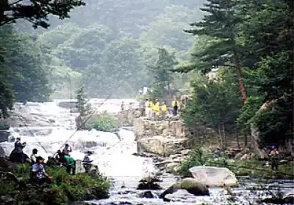
Stay
ホテル龍泉洞愛山
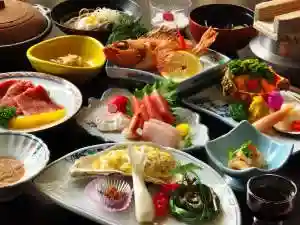
Hoteru Ryuusen Hora Aizan
Hotel in Iwaizumi, Iwate.
岩泉龍泉洞ホテル 龍のすみか（旧龍泉洞温泉ホテル）
Iwaizumi Ryuusen Hora Hoteru Ryuu Nosumika ( Kyuu Ryuusen Hora Onsen Hoteru )
Hotel in Iwaizumi, Iwate.
Dining
龍泉洞レストハウス
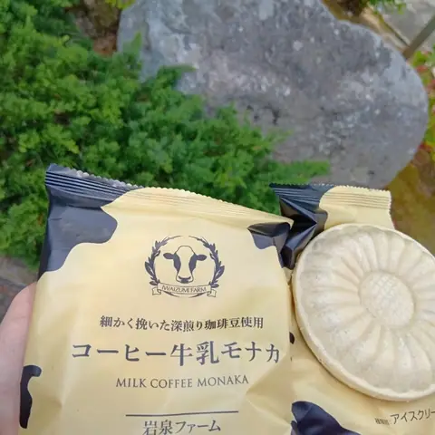
Ryuusen Hora Resutohausu
Shokudo diner in Iwaizumi, Iwate.
栗菓子 中松屋
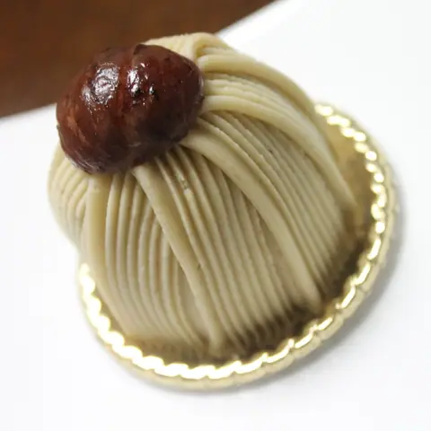
Kuri Kashi Nakamatsu Ya
Japanese sweets shop in Iwaizumi, Iwate.
浜の駅おもと愛土館
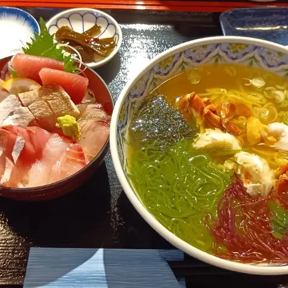
Hama No Eki Omoto Ai Tsuchi Kan
Seafood restaurant in Iwaizumi, Iwate.
道の駅 三田貝分校
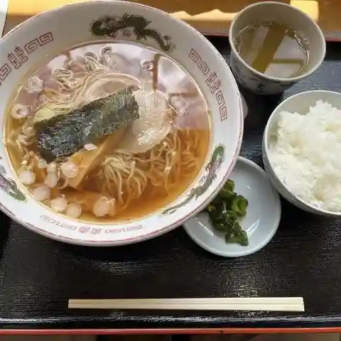
Michi No Eki Mita Kai Bunkou
Roadside-station eatery in Iwaizumi, Iwate.
アックア モンテ
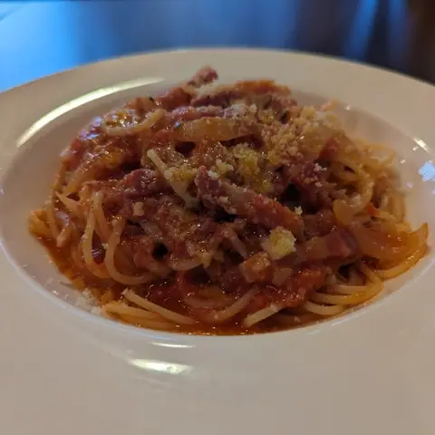
Akkua Monte
Italian restaurant in Iwaizumi, Iwate.
道の駅いわいずみ
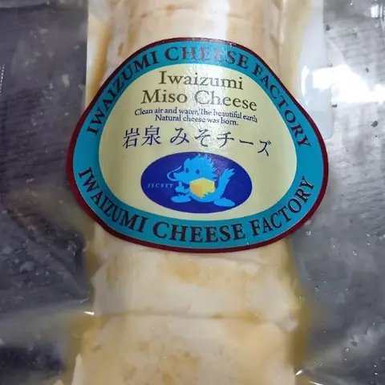
Michi No Eki Iwaizumi
Roadside-station eatery in Iwaizumi, Iwate.
イチマルマルイチ広場
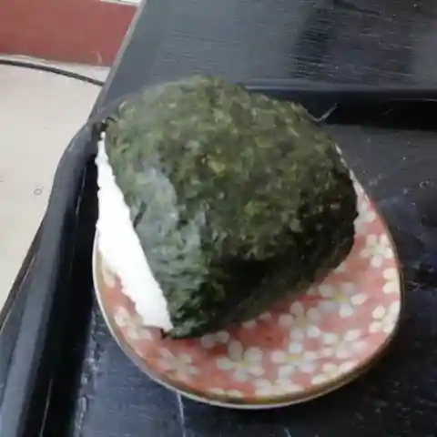
Ichimarumaruichi Hiroba
Shokudo diner in Iwaizumi, Iwate.
レストラン岩泉
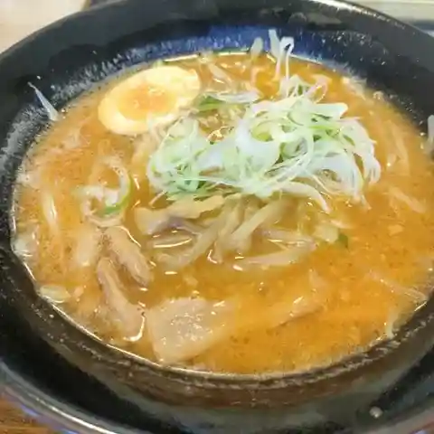
Resutoran Iwaizumi
Yoshoku (Western-style) restaurant in Iwaizumi, Iwate.
中洞牧場
Naka Hora Bokujou
Gelato and ice-cream shop in Iwaizumi, Iwate.
龍泉洞わっか
Ryuusen Hora Wakka
Kiosk in Iwaizumi, Iwate.
和風料理 かなざわ
Wafuu Ryouri Kanazawa
Seafood restaurant in Iwaizumi, Iwate.
ゆう竹食堂
Yuu Take Shokudou
Japanese restaurant in Iwaizumi, Iwate.
ママハウス
Mamahausu
Yakiniku (grilled meat) restaurant in Iwaizumi, Iwate.
龍泉洞温泉ホテル
Ryuusen Hora Onsen Hoteru
Hotel restaurant in Iwaizumi, Iwate.
ViTO×IWAIZUMI
Vito X Iwaizumi
Gelato and ice-cream shop in Iwaizumi, Iwate.
志たあめや
Kokorozashi Taameya
Japanese sweets shop in Iwaizumi, Iwate.
しょおじょお食堂 上町店
Shoojoo Shokudou Uemachi Mise
Shokudo diner in Iwaizumi, Iwate.
ウレイラオーブン
Ureiraoobun
Bakery in Iwaizumi, Iwate.
ぐうぐう亭
Guuguu Tei
Yakiniku (grilled meat) restaurant in Iwaizumi, Iwate.
カンティーナ
Kanteiina
Italian restaurant in Iwaizumi, Iwate.
ふっくら亭
Fukkura Tei
Onigiri shop in Iwaizumi, Iwate.
かもしか
Kamoshika
Shokudo diner in Iwaizumi, Iwate.
味処かもしか
Ajidokoro Kamoshika
Shokudo diner in Iwaizumi, Iwate.
Sights
Local Cuisine (Acorn Dishes and More)
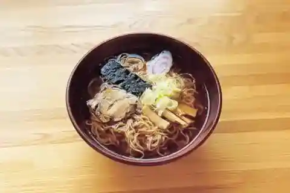
Acorns have been eaten since the Jomon period. "Donguri Ramen" is made by removing the lye from acorn flour produced in the town and mixing it with the ingredients for Chinese noodles, and is characterized by its firmness and smooth texture.
Yotteke Market
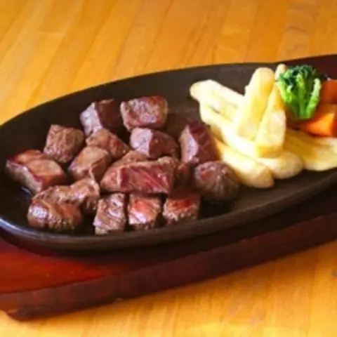
It is located on the way from Morioka to Ryusendo Cave. We sell agricultural products grown with safety and security as our motto, as well as kushimochi handmade by local mothers, dengaku tofu, salt-grilled sweetfish, and more.
Restaurant Iwaizumi (inside the roadside station Iwaizumi)
Shorthorn beef raised freely on large pastures is a healthy beef with low fat and a high red color.
Hama no Eki Omoto Aidokan
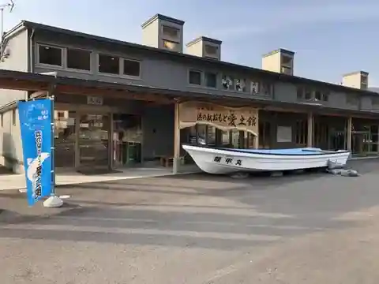
Opened on September 3, 2017. Aidokan" means "let's go together" in the Iwaizumi dialect.
Iwate Iwaizumi Shun no Koya
A "hut" serving seasonal Iwaizumi ingredients is now open at restaurants and lodging facilities in the town.
Ryusendo Cave Water
Rain and snow water is purified through the deciduous strata of broad-leaved trees such as beech and oak that spreads throughout the mountains of Iwaizumi Town, and is further filtered through limestone layers over many years.
Local Cuisine (Tofu Dengaku and More)
A seasonal panel display of wild plants from the Hayasaka Highlands.
Iwaizumi Shorthorn Beef
Tankaku beef is different from the commonly known marbled meat, as it is mostly low-fat, red beef, and has the meat's natural flavor.
Local Cuisine (Hatto and More)
"Kakkebatto," which is eaten with garlic miso, and "Hitsumihatto," which has a traditional flavor made with dried sardines, kelp, and shiitake mushrooms.
Nakamatsuya
A long-established confectionery shop that represents Iwaizumi Town.
Ryusendo Wakka
The Ryusendo Cave Tourist Hall, which was located across from Ryusendo Cave, opened in April 2023 as a new exchange base, "Ryusendo Wakka".
Shitaameya
A long-established confectionery shop located on the Iwaizumi-cho Odori shopping street.
Mori no Takara Matsutake Sake
Treasure of the Forest Matsutake Mushroom Sake
Furusato Yakuzen Enju
Based on Iwaizumi's local food, we offer five types of "Yakuju Gozen" menus that you can choose according to your physical condition.
Hayasaka Highland Visitor Center
A seasonal panel display of wild plants from the Hayasaka Highlands.
Izumikin Sake Brewery
A sake brewing company located in Iwaizumi Town. Iwaizumi Town is rich in water and nature.
Akka Cave
Akka Cave, located in the northern part of the Kitakami Mountains, is a large cave with a total length of 23.7 km, the longest in Japan.
Ryusendo Cave and Ryusen Shindo Science Museum
Ryusendo Cave and Ryusen Shindo Science Museum
Gotensaki Natural Recreation Forest
There is a promenade along the coastline through a rare virgin forest of broad-leaved trees, and you can enjoy forest bathing while listening to the sound of the ocean.
Hyoto Community Facility
Located on the banks of the Yasuegawa River, where rare creatures such as the Japanese kingfisher and the Japanese white-spotted duck live, there are mainly mountain huts hand-built by local people, as well as bungalows, a kitchen, and an administrative…
Kumanohana Observatory
It got its name because the peninsula opposite the observation deck resembles the head and snout of a bear.
Okawa Seven Falls
The Okawa Shichitaki Falls are the most scenic spot in the Komoto River watershed, with seven waterfalls of various sizes stair-stepping down the less than 100-meter-long river channel.
Mt. Urira
"Ureira" means "mountain with a lot of mist or mist" in the Ainu language.
Akkamori
Yasugamori (1,239.1m above sea level) is located in the northwestern part of Iwaizumi Town, in the northern part of the Kitakami Mountains.